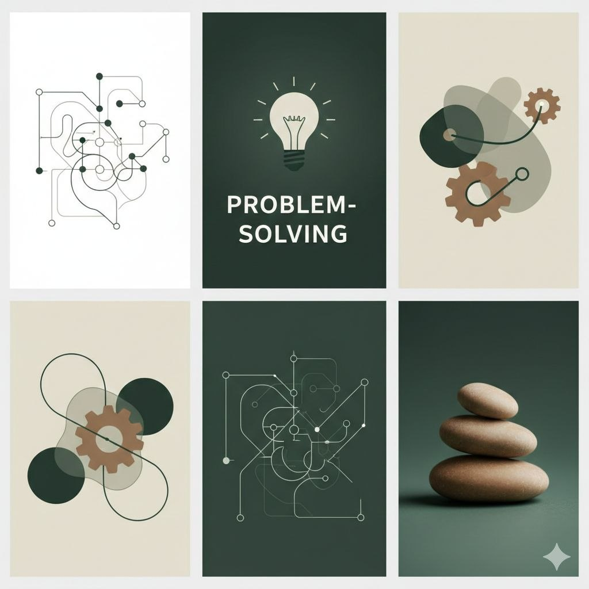
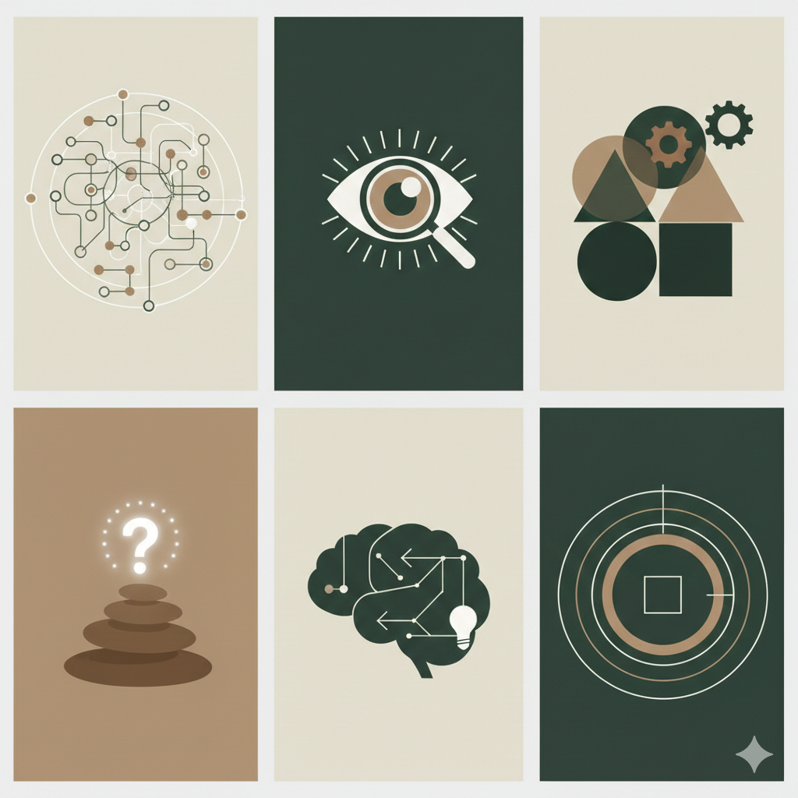
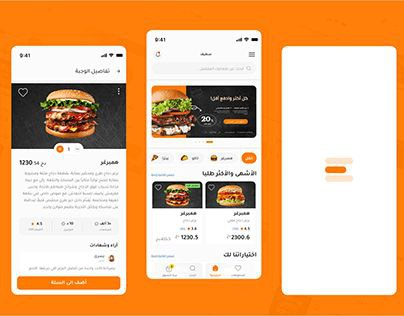
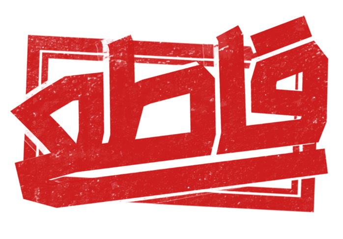
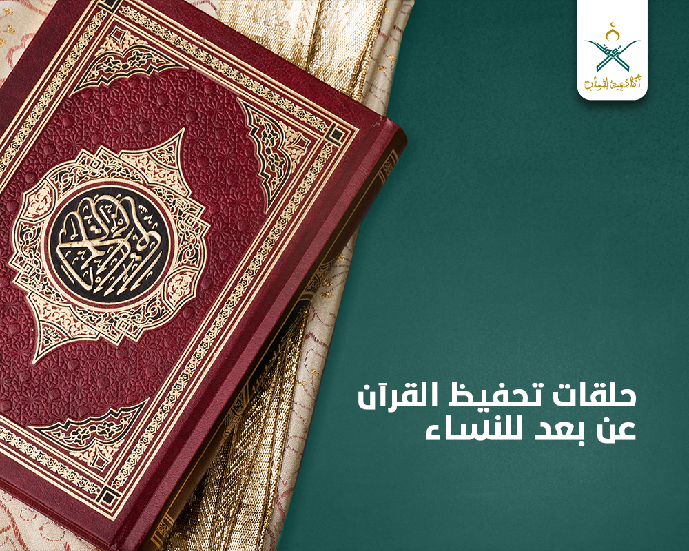

أنا طالبة متخصصة في تقنية المعلومات. رحلتي الأكاديمية تركز على إتقان الأدوات والاستراتيجيات التي تدير العالم الرقمي. أؤمن أن التكنولوجيا لا تقتصر فقط على أجهزة الكمبيوتر، بل تتعلق بابتكار طرق فعالة لربط الأشخاص بالمعلومات التي يحتاجون إليها. أنا ملتزم ببناء أنظمة قوية وتقديم حلول ذكية.
تقنية المعلومات (IT) هي العمود الفقري للأعمال الحديثة. وهي تشمل استخدام الأنظمة — وخاصة أجهزة الكمبيوتر والاتصالات — لتخزين المعلومات واسترجاعها وإرسالها. إنه مجال يجمع بين المهارة التقنية والتفكير الاستراتيجي لإدارة البنية التحتية الرقمية لأي منظمة.

كطالب في تخصص تقنية المعلومات، أنا لا أكتفي بإصلاح الأخطاء فحسب، بل أحلل المسبب الجذري لبناء حلول مستدامة. أستمتع بتحدي استكشاف أخطاء الأنظمة المعقدة (Debugging) وتحسين سير العمل لضمان أعلى مستويات الأداء.

أتعامل مع كل مشروع بعقلية تحليلية؛ فمن خلال تقييم مختلف وجهات النظر والتقنيات، أتخذ قرارات مدروسة تتماشى مع أفضل الممارسات في تكنولوجيا المعلومات وبنية الأنظمة.

منصة ذكية لتوصيل الطعام تتميز بتتبع الطلبات في الوقت الفعلي، وبوابات دفع آمنة، ولوحة تحكم مستخدم بديهية لطلب الطعام بسلاسة.

تطبيق ويب معلوماتي صُمم لمساعدة المستخدمين على تحديد منتجات المقاطعة وإيجاد بدائل محلية من خلال قاعدة بيانات قابلة للبحث وفحص الباركود.

منصة للتعلم عن بعد لحفظ القرآن الكريم، تدمج مؤتمرات الفيديو، وجدولة الجلسات، وتتبع التقدم لكل من الطلاب والمعلمين.